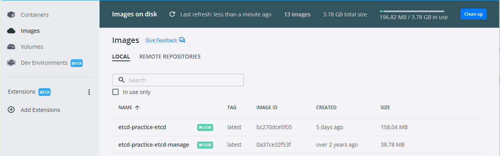
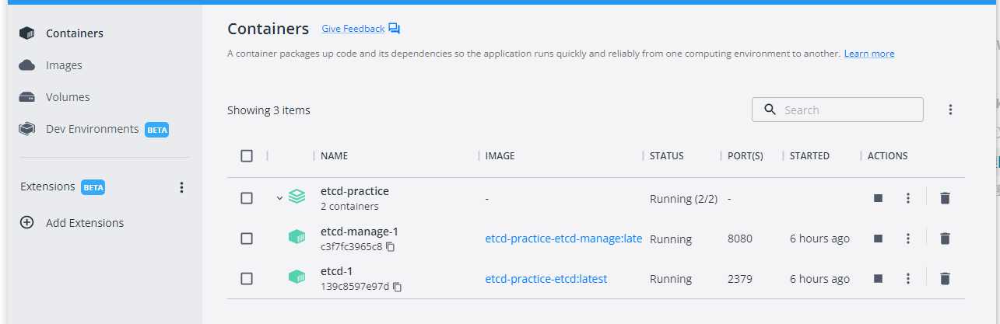

项目搭建过程
前提条件：本地Windows主机下已经安装了Docker
下载地址： 到Docker主页去找
创建项目
- 项目名称：etcd-practice
- 项目root目录：etcd-practice/
创建ectd的Docker构建配置文件
- 项目root目录下创建etcd目录，etcd目录创建Dockerfile文件，内容如下:
FROM 指定容器的来源
FROM bitnami/etcd LABEL maintainer="Leebai <runningriven@gmail.com>" - 项目root目录下创建etcd-manage目录，etcd-manage目录创建Dockerfile文件，内容如下：
evildecay/etcdkeeper是一款轻量级的etcd web客户端，详细内容参见evildecay/etcdkeeper-Lightweight etcd web client.
FROM evildecay/etcdkeeper LABEL maintainer="Leebai <runningriven@gmail.com>"
项目根目录配置文件创建
- .env文件,内容如下
# 设置时区
TZ=Asia/Shanghai
# 设置Docker工作的网络模式
NETWORKS_DRIVER=bridge
# 设置本地的etcd的访问端口
ETCD_PORT=2379
# 设备本地的etcd-manage的访问端口
ETCD_MANAGE_PORT=8080
- docker-compose.yaml,内容如下
version: '3.5'
# 网络配置
networks:
backend:
driver: ${NETWORKS_DRIVER}
# 服务容器配置
services:
etcd: # 自定义容器名称
build:
context: ./etcd # 指定构建使用的 Dockerfile 文件
environment:
- TZ=${TZ}
- ALLOW_NONE_AUTHENTICATION=yes
- ETCD_ADVERTISE_CLIENT_URLS=http://etcd:2379
ports:
- "${ETCD_PORT}:2379" # 设置本地的端口ETCD_PORT映射到容器的2379端口
networks:
- backend
restart: always
etcd-manage:
build:
context: ./etcd-manage
environment:
- TZ=${TZ}
ports:
- "${ETCD_MANAGE_PORT}:8080" # 设置本地的端口ETCD_MANAGE_PORT映射到容器的8080端口
depends_on: # 依赖容器
- etcd # 在 etcd 服务容器启动后启动
networks:
- backend
restart: always
cmd进入项目根目录,运行docker-compose up -d构建项目
如果是第一次运行该命令，该命令会先创建镜像，然后启动镜像。具体的运行效果如下所示：
Microsoft Windows [版本 10.0.19043.2130]
(c) Microsoft Corporation。保留所有权利。
C:\Users\Nicklaus>D:
D:\>cd etcd-v3.5.5-windows-amd64
D:\etcd-v3.5.5-windows-amd64>cd etcd-practice
D:\etcd-v3.5.5-windows-amd64\etcd-practice>docker-compose up -d
[+] Building 6.0s (11/11) FINISHED
=> [etcd-practice-etcd-manage internal] load build definition from Dockerfile 0.7s
=> => transferring dockerfile: 31B 0.0s
=> [etcd-practice-etcd internal] load build definition from Dockerfile 0.9s
=> => transferring dockerfile: 31B 0.0s
=> [etcd-practice-etcd-manage internal] load .dockerignore 1.1s
=> => transferring context: 2B 0.0s
=> [etcd-practice-etcd internal] load .dockerignore 1.4s
=> => transferring context: 2B 0.0s
=> [etcd-practice-etcd-manage internal] load metadata for docker.io/evildecay/etcdkeeper:latest 4.0s
=> [etcd-practice-etcd internal] load metadata for docker.io/bitnami/etcd:latest 3.8s
=> [auth] evildecay/etcdkeeper:pull token for registry-1.docker.io 0.0s
=> [auth] bitnami/etcd:pull token for registry-1.docker.io 0.0s
=> CACHED [etcd-practice-etcd-manage 1/1] FROM docker.io/evildecay/etcdkeeper@sha256:685e4ab44f6762759dd7f0de883 0.0s
=> [etcd-practice-etcd] exporting to image 0.5s
=> => exporting layers 0.0s
=> => writing image sha256:0a37ce32f53f175da15e6c110535378a8d7d889d7ceb00cd581d135c870a4d59 0.1s
=> => writing image sha256:bc270dce5f058908f7e530979afcc3b1e7b378218c34c77e07ca2c357c082706 0.1s
=> => naming to docker.io/library/etcd-practice-etcd-manage 0.1s
=> => naming to docker.io/library/etcd-practice-etcd 0.1s
=> CACHED [etcd-practice-etcd 1/1] FROM docker.io/bitnami/etcd@sha256:520ac0f6a2f33299c73c2d42d646b841d8256b6f1c 0.1s
Use 'docker scan' to run Snyk tests against images to find vulnerabilities and learn how to fix them
[+] Running 3/3
- Network etcd-practice_backend Created 0.8s
- Container etcd-practice-etcd-1 Started 4.6s
- Container etcd-practice-etcd-manage-1 Started 5.6s
D:\etcd-v3.5.5-windows-amd64\etcd-practice>
打开Windows主机中的Docker Desktop,会发现Images下出现了：
etcd-practice-etcdetcd-practice-etcd-manage
同时Containers下出现了etcd-practice,状态为：Running
这说明在本地已经将项目etcd-practice构建到我们的Docker容器中了。如下图所示：


本地浏览器访问：http://127.0.0.1:8080/是可以访问到我们之前在docker-compose.yaml文件配置的evildecay/etcdkeeper客户端的。
上述所说项目的整个配置源码路径
https://github.com/luweiqianyi/docker-compose-deploy-etcd.git
「真诚赞赏，手留余香」
 YinChao's Blogs
YinChao's Blogs
真诚赞赏，手留余香
使用微信扫描二维码完成支付

comments powered by Disqus